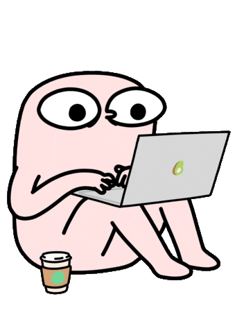
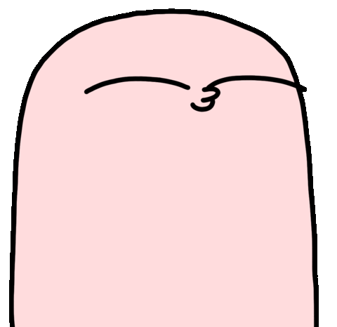

We will have a series of game engine tutorials during some of our class sessions that will walk you through the process of creating a platformer. The game engine for this class will be Godot, which is open source and easy to host on sites like itch.io. You are free to remix these tutorials to create your own games. Additional resources can be found under Content > Resources.
Why a platformer first? A platformer touches nearly every system you need for any 2D game: the editor and scene tree, sprites and input, physics and collisions, enemies and logic, game state, UI, and publishing. Once you have these fundamentals, you’ll be able to reuse most of this code for our last game jam.
What you’ll build: By the end of these tutorials you’ll have a small but complete platformer: a player that moves and jumps, a level with solid ground and hazards, at least one enemy, a win/lose condition, a simple UI, and an exported build you can upload to itch.io.
How these are graded: These labs are completion based. Follow along, get the result working, submit and you’re done. You are free to remix and extend them.
Install Godot
Follow along the install tutorial to get Godot 4 set up on your machine and confirm it launches.
Nodes and Scenes
Follow along the tutorial to learn the Godot editor, nodes, and scenes. You’ll learn how the scene tree works, how nodes combine to make game objects, and how to save and instance reusable scenes.
Sprites, Assets, and Movement
Follow along the tutorial to learn about sprites, importing assets, and simple player movement. You’ll wire up the input map and move a character around the screen.
Physics, Hitboxes, and Collisions
Follow along the tutorial to learn about physics bodies, hitboxes, and collision detection. You’ll set up solid ground, walls, and areas that detect when the player enters them.
Enemies and Pathfinding
Follow along the tutorial to learn about enemies and pathfinding. You’ll add an enemy that moves along a path or navigates toward the player.
Game State and Rules
Follow along the tutorial to learn how to track game state and define win and lose conditions. You’ll add a score or objective, detect when the player wins or loses, and reset or advance the level.
Audio and Polish
Follow along the tutorial to learn how to add sound effects and background music, and to apply small polish like simple animations and feedback.
UI and Levels
Follow along the tutorial to learn how to build a user interface, add a start and restart menu, and move between multiple levels or screens.
Publishing
Follow along the tutorial to learn how to export your game and upload it to itch.io. You’ll create a web (HTML5) export and publish a playable build.

Extending to the Puzzle Game Jam
Once you’ve completed these labs, you’ll have the pieces to build a puzzle game by remixing your platformer code. Puzzle games typically require:
- A grid or board — most puzzles live on a discrete grid of cells rather than in continuous space (reuse scenes and instancing from Lab 1).
- Discrete/snapped movement or placement — pieces move cell to cell or snap into position rather than moving freely (adapt movement from Lab 2).
- A clear rule set — the legal moves and constraints that define the puzzle (built on game logic from Labs 4–5).
- A solve/goal condition — a way to check whether the current board state satisfies the win condition (reuse state and win/lose logic from Lab 5).
- Level data — a way to define individual puzzles or levels, since puzzlers are usually hand-authored rather than continuous (reuse the multi-level structure from Lab 6).
- Feedback — clear audio and visual cues for valid moves, invalid moves, and solving the puzzle (reuse audio and polish from Lab 7).
- Undo/reset (recommended) — puzzle players expect to be able to undo a move or restart cleanly, which builds directly on how you store and reset game state.